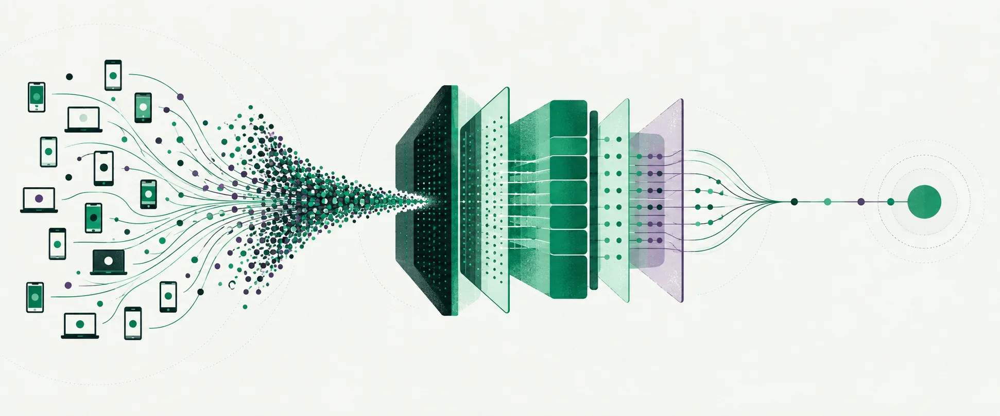

CORE SERVICE
Webシステム・API開発と
開発チームへの技術支援
新しいサービスの開発から、既存システムの改善まで。アプリケーションとインフラの両面から、目的に合った仕組みづくりを支援します。
- 要件整理・アーキテクチャ設計
- Webシステム・APIの実装とテスト
- クラウド基盤の構築・運用改善
- 受託開発・SESによる開発支援
ソフトウェア開発・システム設計・技術支援
WebシステムやAPI、アプリの開発から、クラウド基盤の設計、AIの活用まで。ALTAGOは、事業の目的と現場の課題に合わせて仕組みを考え、設計・実装・運用を支援します。受託開発・SESのどちらもご相談いただけます。
SERVICES
新規開発、既存システムの改善、開発チームへの技術支援まで。受託開発・SESに対応し、要件整理から設計・実装・運用まで、プロジェクトに合わせて支援します。
CORE SERVICE
新しいサービスの開発から、既存システムの改善まで。アプリケーションとインフラの両面から、目的に合った仕組みづくりを支援します。
01
02
03
04
TECHNICAL EXPERIENCE
視聴者参加型番組や高負荷Web APIなど、アクセスが短時間に集中するシステムも手がけてきました。こうした経験を活かし、必要な性能や信頼性、運用コストに合わせて構成をご提案します。

EXPERTISE
Web/APIの開発から、コンテンツ配信、非同期処理、データ分析まで。CDNやクラウドサービスを適材適所で組み合わせ、使いやすさと運用のしやすさを両立する構成を考えます。
CDNを活用し、コンテンツの配信やキャッシュを設計。更新頻度やアクセス特性に合わせ、応答速度とオリジンの負荷を調整します。
Cloud Runなどを活用して、Web/APIや業務処理を実装。認証、データ連携、デプロイ、監視まで含めて構成を設計します。
Pub/Subなどでシステム間を非同期に連携。時間のかかる処理を切り離し、再試行や重複への対処も含めて設計します。
BigQueryなどを活用し、ログや業務データの収集・集計・分析を支援。運用状況の把握やサービス改善につなげます。
SYSTEM MAP
SELECTED WORK
守秘義務のため案件名と詳細仕様は伏せ、分野・担当範囲・技術構成を記載しています。
実運用での最大瞬間受信数
本番同等の負荷試験：50万req/s
受付締め切りから
全件の集計確定まで（実質）
バックエンドとネットワーク
基盤に携わった経験
民放キー局｜視聴者参加型番組
参加イベントの受信、認証・契約検証、集計と正誤判定、結果参照API、管理画面を設計。開発から放送当日の運用まで担当しました。
実運用では最大8万req/sを受信。本番同等の負荷試験では50万req/sを確認しました。
CDN設定のコード化、配信ログの分析基盤、エッジ処理、ログ収集方式の設計。
スマートフォン向け紙面Viewerのバックエンドと、過去記事を高速に検索する基盤を設計・実装・運用。
RTMP映像を受信し、人流・滞留・通過人数を解析する基盤を構築。モデルの調整も担当。
50万req/s規模のWeb APIなど、高負荷バックエンドの設計・実装・運用を多数経験。CDNやクラウドインフラまで含めて全体を捉え、性能・信頼性・コストのバランスに優れたアーキテクチャをご提案します。
PRINCIPLES
本番は必ず想定を外れます。外れたときに戻せることを、最初から設計に入れます。
イベントをログに残し、再生できる状態を保ちます。復旧手順は本番前に通します。
設計と実装をした本人が当日の運用に入り、引き継ぎの隙間をなくします。
想定の数倍を実際に流し、限界と壊れ方を確認してから構成を決めます。
COMPANY
関わる案件を絞り、一つひとつに深く入ることを方針としています。
技術と人の可能性をつなぎ、
より良い選択肢を社会に増やす。
CONTACT